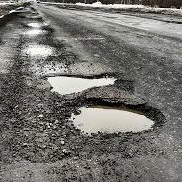

My Potholes Website
I designed this website to document some of my favorite potholes around
Boston. Below you can see my three favorite potholes. To see a map of all
the potholes, click "Map" in the navigation bar. To add your own favorite
potholes, click "Add new."
String of Pearls

Fractal Pothole

Salt and Sand